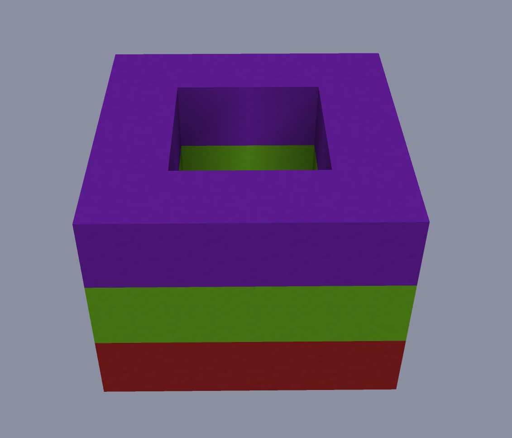
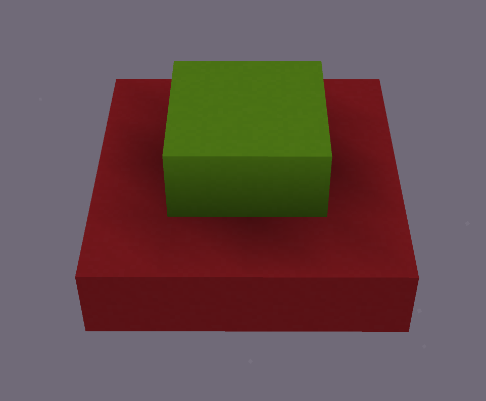
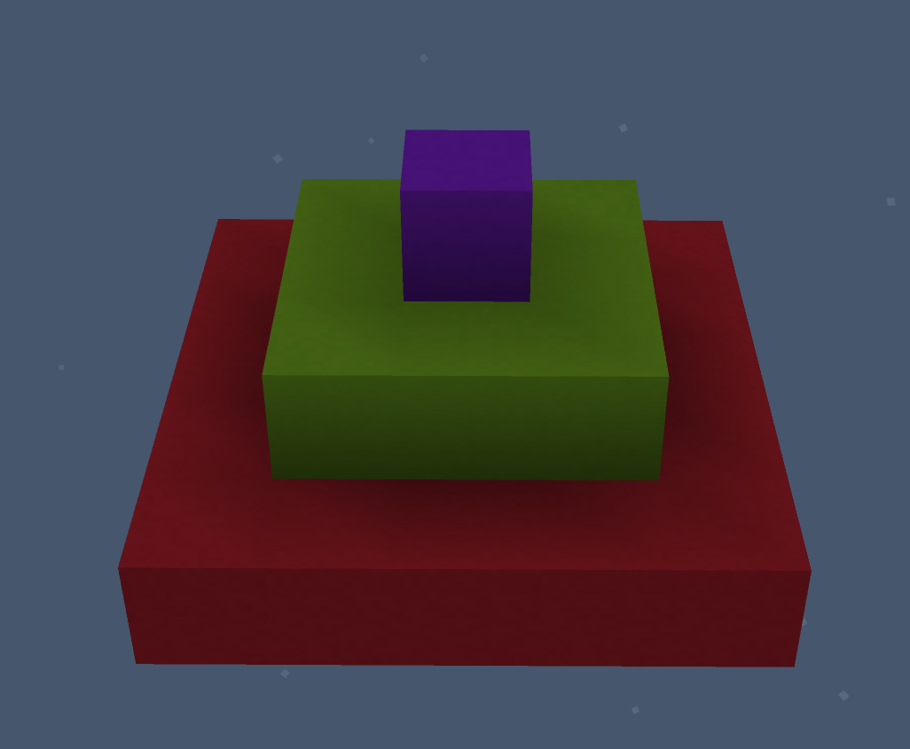

🎯 Цели занятия
- Повторить, что такое цикл и зачем он нужен
- Понять, что такое вложенные циклы (цикл внутри цикла)
- Научиться использовать вложенные циклы для построения фигур
- Узнать, как менять слот инвентаря агента
- Построить фигуры по образцам с помощью кода
📋 План занятия
| Этап занятия | Время | Что делаем |
|---|---|---|
| Орг. момент | 5 мин | Приветствие, настрой на занятие |
| Повторение: циклы | 10 мин | Вспоминаем, что такое цикл и как он работает |
| Вложенные циклы | 20 мин | Изучаем новый материал: цикл внутри цикла |
| Интерактивные задания | 20 мин | Собираем алгоритмы с вложенными циклами |
| Смена слота инвентаря | 10 мин | Учимся менять блоки у агента |
| Практика: строим фигуры | 20 мин | По фотографиям строим фигуры с помощью кода |
| Опрос и итоги | 5 мин | Проверяем знания |
| Итого | 90 мин | — |
1 Повторяем: что такое цикл?
Цикл — это конструкция, которая позволяет выполнять один и тот же блок команд несколько раз.
-- Простой цикл: повторяем 5 раз
повторить 5 раз [
двигаться вперёд
]
-- Цикл с командой внутри
повторить 4 раз [
поставить блок
двигаться вперёд
]🧠 Проверь себя
Сколько раз выполнится команда поставить блок в этом коде?
повторить 3 раз [
поставить блок
двигаться вперёд
поставить блок
]2 Вложенные циклы
Иногда одного цикла недостаточно. Например, чтобы построить квадрат 5×5, нужно:
- Повторить 5 раз (для каждой строки)
- Внутри каждой строки поставить 5 блоков
Для этого используется вложенный цикл — цикл внутри другого цикла.
-- Внешний цикл: повторяем 5 раз (строки)
повторить 5 раз [
-- Внутренний цикл: ставим 5 блоков в ряд
повторить 5 раз [
поставить блок
двигаться вперёд
]
-- Переходим на следующую строку
повернуть налево
двигаться вперёд
повернуть налево
]🧩 Собери вложенный цикл
Перетащи шаги в правильном порядке, чтобы построить прямоугольник 3×4 (3 строки, 4 блока в каждой):
🔢 Сколько раз выполнится команда?
Сколько раз агент поставит блок в этом коде?
повторить 4 раз [
повторить 3 раз [
поставить блок
двигаться вперёд
]
]3 Меняем слот инвентаря агента
Чтобы агент ставил разные блоки, нужно научиться менять активный слот в его инвентаре.
| Блок | Что делает | Пример |
|---|---|---|
выбрать слот 1 | Активирует первый слот инвентаря | выбрать слот 1 (например, земля) |
выбрать слот 2 | Активирует второй слот | выбрать слот 2 (например, камень) |
выбрать слот 3 | Активирует третий слот | выбрать слот 3 (например, дерево) |
И так можно делать с 27 ячейками, так как инвентарь Агента представляет собой маленький сундук.
-- Строим стену из разных блоков
выбрать слот 1 -- земля
повторить 3 раз [
поставить блок
двигаться вперёд
]
выбрать слот 2 -- камень
повторить 3 раз [
поставить блок
двигаться вперёд
]🎒 Какой слот нужно выбрать?
Чуть раньше в качестве примера писалось какие предметы на каких слотах находятся. Агент должен построить башню: 3 блока земли, потом 3 блока камня. Какой код правильный?
4 Практика: строим фигуры по образцам
Теперь применим знания на практике! В Minecraft Education создай плоский мир и построй эти фигуры с помощью кода.



🛠️ Практическое задание: построй фигуры
Запусти Minecraft Education, создай плоский мир и выполни задания:
повторить N раз, где N — номер шага.
📝 Проверь себя
1. Что такое вложенный цикл?
2. Сколько раз выполнится внутренний цикл, если внешний повторяется 3 раза, а внутренний — 4 раза?
3. Какой блок меняет слот инвентаря агента?
4. Для чего нужны вложенные циклы?
5. Что нужно сделать, чтобы агент поставил разные блоки?
💭 Рефлексия
Напиши, что тебе понравилось, а что было сложно:
Нажми на вопрос — Алиса ответит тебе прямо сейчас!
Просто скажи: «Алиса, объясни вложенные циклы для детей»